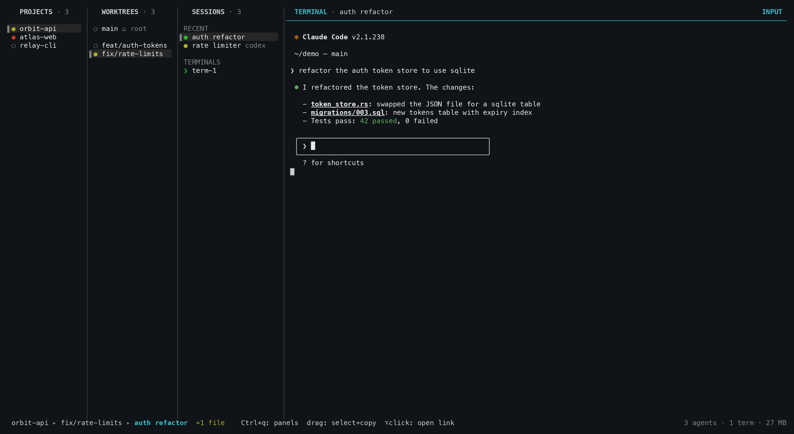
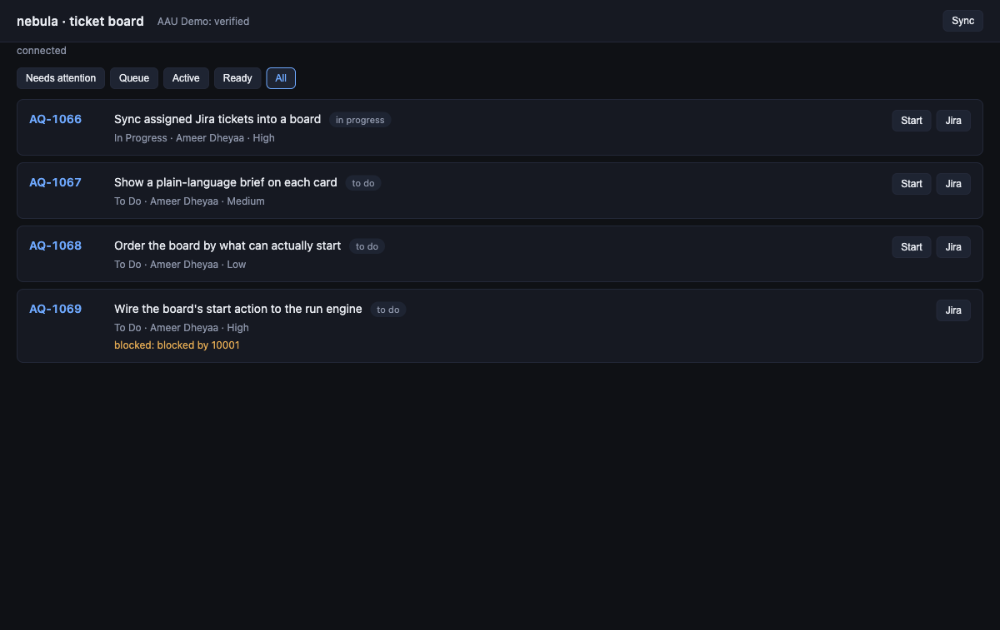

Mission control for
your coding agents
Run Claude Code, Codex, Cursor, Pi and Muse across every project and git worktree you own — from one terminal, one keyboard, one tree. They keep working when you close it.

Three agents, three tabs, and no idea which one needs you
nebula replaces the reading with a tree and a color. Every session carries a status dot; every parent rolls up its children — so a red dot on a collapsed project tells you exactly where to look.
One tree, up to four panels
Projects → worktrees → sessions → terminal pane. h/j/k/l moves, Enter drills in,
and landing on a live pane hands it the keyboard.
A daemon that owns the PTYs
Quit the TUI, shut the laptop, come back tomorrow. The agents never stopped, and the scrollback ring is replayed on attach.
Status dots you read instead of screens
Yellow mid-turn, violet finished-and-unseen, green read, red waiting on you — plus a n done badge counting the terminals you still owe a look.
Real git worktrees, one keystroke
n branches off into an actual git worktree. Two agents in two directories never collide, and a worktree hook can claim a port or route.
Agents that drive nebula back
Tell a session "do this in a worktree" and it runs nebula worktree, then restarts itself resumed inside the new checkout.
Every pull request & issue, in place
nebula asks gh what's open. Read a PR under the cursor, g for its diff, y to comment, n for a session scoped to it.
Diff, find, grep, browse
g the diff viewer, f the file finder, F a git grep, b the tree browser — all scoped to the selected worktree, one key from anywhere.
/ finds anything, anywhere
The palette spans every workspace, sorted by attention: needs-feedback first, then running, then unseen — so / Enter is the fastest way back to whatever needs you.
It follows you to other machines
nebula ssh <host> opens nebula there, installing if missing. nebula tunnel puts that machine's TUI in a browser tab over one ssh tunnel.
No Electron, no browser, no MCP
One ~4 MB Rust binary and a unix socket. A daemon and a ratatui client — that's the whole thing.
The ticket board, in your terminal
Pull the Jira tickets assigned to you and show them as a board —
cards you scan and open, kept current by the daemon whether or not the UI is open.
Press Shift+J in the TUI, or run nebula web for the same board in a browser.
The daemon cuts feat/<key>-<slug> and launches Claude with the ticket as context. Batch-start with a concurrency limit; the rest queue.
Configured checks run, plus a separate review pass, tracking quality evidence that goes stale when the code moves.
The agent reports with nebula stage done, the daemon captures the diff as evidence, and the card becomes Ready — a turn that ends without a report is Needs input, never a fake Ready.
Only explicit Blocks links gate a ticket; a blocked card shows blocked by AQ-### and sorts after the work you can actually start.

Five CLIs out of the box
Install the CLI, pick it in the n picker, done. A sixth, Grok, needs one config block. Teach nebula any new CLI with one harnesses entry.
From zero to an agent in five keys
Add a repo
A project is just a git checkout. nebula add ~/code/my-app — or nebula add . from inside it.
Open the TUI
A bare nebula launches it and auto-starts the daemon. Tab / h l move focus, j k the selection.
Pick a worktree
n in the worktrees panel branches off into a real git worktree. Two agents, two directories, no collisions.
Start the agent
n opens the picker — Claude, Codex, Cursor, Pi, Muse — then type the first prompt. Or p for a quick prompt.
Walk away
q leaves the TUI; the daemon keeps every PTY. Come back with nebula an hour later, scrollback replayed.
Everything, one page away
The full docs render right here in the browser — keys, commands, sessions, configuration and how it all works.